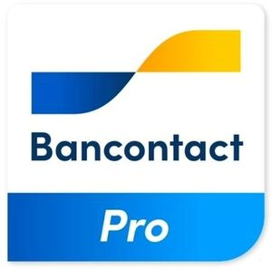

Trade Mark Journal No.2026/007 13 February 2026
WO0000001899936 (9,35,36,42)
Office of origin: Benelux Office for Intellectual Property (BOIP)
Date of International Registration:31 October 2025
Date of designation in the UK:
31 October 2025

International priority date claimed: 17 October 2025
(Benelux Office for Intellectual Property (BOIP))
(1535128)
- Class 9
- Computers, computer peripherals and devices for data processing and for the electronic transfer of funds, including payment terminals; apparatus for recording, transmission or reproduction of sound or images; magnetic or electronic data carriers; magnetic cards; electronic devices enabling contactless payment by means of a chip; mechanisms for coin-operated apparatus; ATMs that allow users to withdraw or deposit money or to perform financial transactions or to purchase other services, such as changing the PIN code of a payment instrument, checking a balance in a bank account or printing account statements; calculating machines; disc-shaped sound carriers and optical discs; telecommunication devices; parts for the aforesaid goods; software and software applications, including mobile phone apps, that enable users of electronic communications networks to make payments; downloadable computer programs and application software for mobile phones and other digital devices that enable users to make payments; downloadable software for processing electronic payments; downloadable software for processing, systematising and remembering personal data linked to electronic orders and payments, also with a view to later new orders and payments; downloadable software, as well as apps for mobile phones, for scanning images and documents, including so-called QR codes, that enable users to make payments via mobile phones and other digital devices.
- Class 35
- Business assistance, business management and administrative services in the financial sector or in connection with financial transactions; business analysis, business research and business information services in the financial sector or in connection with financial operations; financial records management; financial auditing; promotion of financial services and products; administrative support and data processing; data processing, systematization and management; automated compilation of orders and order preferences.
- Class 36
- Insurance, financial affairs, monetary services and banking; financial services; financial transfers, transactions and payment services; electronic payment services, including processing electronic payments; providing financial services via wireless networks, global computer networks and mobile telecommunication devices, including bill payment; electronic banking; electronic processing and transmission of the payment of bills and credit transfer data of others via the Internet; online processing of financial transactions via a global computer network or via telecommunications, mobile or wireless devices; verification and authentication of financial transactions; accepting, authorizing and processing financial transactions after identification of the user within an electronic environment, such as a website or database, for authentication; information and advice regarding the aforesaid services; all the aforesaid services including by electronic means such as provided via the Internet.
- Class 42
- Rental of computers and computer equipment for the electronic transfer of funds; programming for electronic data processing; design and updating of computer software; consultancy with regard to computer hardware and software; providing, for temporary use, online non-downloadable software for processing electronic payments; information and advice regarding the aforesaid services.
Bancontact Payconiq Company N.V.
Representative: Lydian cvba, Tour & Taxis, Havenlaan 86 C, B113, B-1000 Brussel, BELGIUM